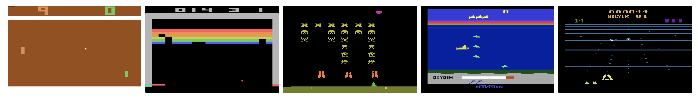
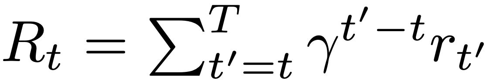
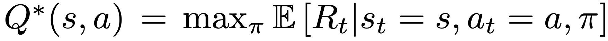
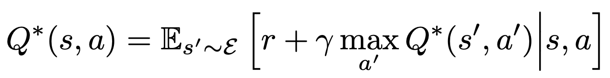
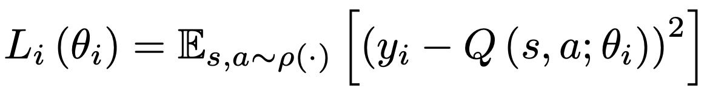
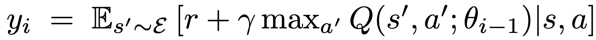
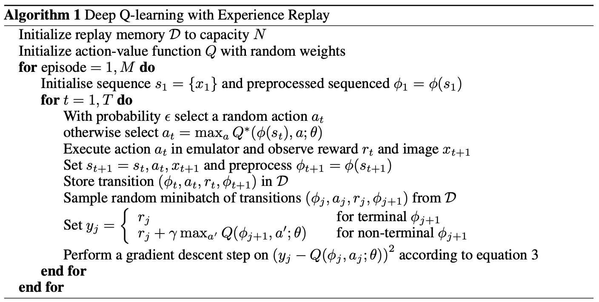
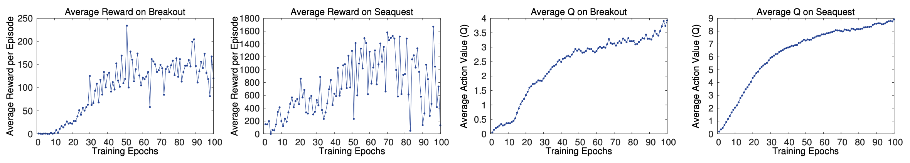
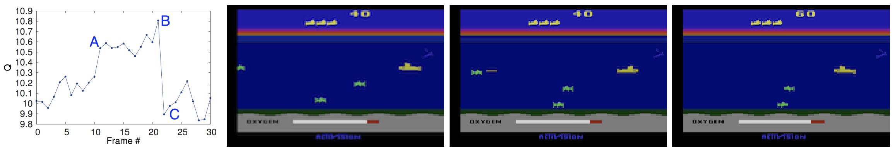
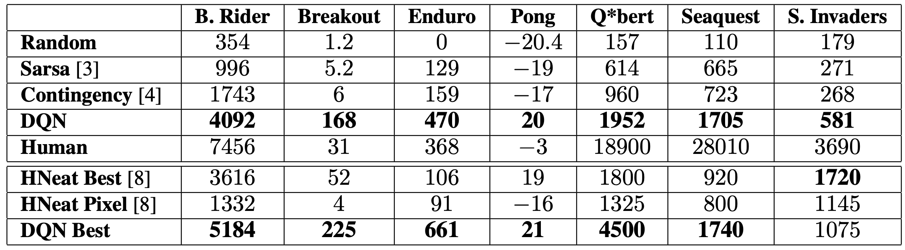

Jinha Choi
Playing Atari with Deep Reinforcement Learning introduces a deep reinforcement learning agent that learns control policies directly from raw Atari game frames, without any game-specific engineering. Their approach combines a convolutional neural network with Q-learning and experience replay to handle high-dimensional visual input, stabilize training, and break temporal correlations in the data.
The same network architecture and hyperparameter settings are used and evaluated on all seven Atari games. The agent achieves strong performance compared to previous models and even exceeds human in some games. This paper is one of the first to show that a single general-purpose deep learning system can learn from only pixels and rewards.

Deep learning first flourished in the fields of supervised and unsupervised learning, where models learn from large labeled datasets or discovered structure from unlabeled data. In those areas, neural networks achieved remarkable success — especially in computer vision and natural language processing — largely because the data distribution is stable and feedback is immediate.
In contrast, reinforcement learning (RL) poses a very different challenge. Instead of static datasets, agents learn by interacting with an environment and receiving rewards as feedback. This difference makes RL much harder to scale with deep learning methods. Before this paper, most RL algorithms relied on hand-crafted feature representations or linear value functions designed by humans. While these methods worked for small problems, they couldn’t handle raw, high-dimensional inputs like game frames or real-world images.
The difficulty comes from several fundamental issues:
The paper “Playing Atari with Deep Reinforcement Learning” (Mnih et al., 2013) introduced a powerful approach to overcome these limitations. By combining a convolutional neural network (CNN) with Q-learning and a new experience replay mechanism, the authors trained agents directly from raw Atari game pixels — without any manually designed features. They used a single, fixed network architecture and hyperparameter setting across different games, training a separate agent for each. This demonstrated that a deep neural network could learn control policies end-to-end from high-dimensional visual input.
In reinforcement learning, an agent interacts with an environment over a sequence of discrete time steps. At each time step t, the agent observes the current game screen as an image (xt ∈ ℝd), selects an action at from the action space A, and receives a scalar reward rt from the environment. The Atari emulator serves as the environment, updating the game state based on the chosen action.
The agent defines state as a sequence of observations from the game and actions in each image observation
The episode terminates at a finite time step T, so the interaction can be modeled as a finite Markov Decision Process (MDP). The goal of the agent is to maximize the cumulative future discounted reward:

The optimal state-action value function (or Q-function) is defined as:

According to the Bellman optimality equation:

In theory, repeatedly applying the Bellman update through value iteration can recover the optimal Q*. However, this approach becomes intractable when the state space is large or continuous, such as when the input is high-dimensional image data. To generalize across states, they use a function approximator.
The paper uses a neural network parameterized by θ to approximate Q(s, a; θ). This Q-network is trained to minimize the following loss at iteration i:

where the target yi is computed using the previous network parameters θi − 1:

Here, ρ(s,a) denotes the behavior distribution from which transitions are sampled. The optimization is performed using stochastic gradient descent (SGD).
This framework is both model-free—it relies solely on samples from the emulator—and off-policy, since training uses transitions gathered under an ε-greedy behavior policy.
The central contribution of the paper is the combination of Q-learning with a deep convolutional neural network that estimates the action-value function directly from pixels. To make this learning stable, the authors introduce two crucial mechanisms: experience replay and a fixed target network. Together, these ideas address the instability that arises when training a neural network on sequential, correlated RL data.
At each time step t, the agent interacts with the environment (the Atari emulator) by choosing an action based on an ε-greedy policy: with probability ε, a random action is chosen for exploration; otherwise, the agent selects the action that maximizes its current Q-value estimate. The environment returns the next frame xt+1 and reward rt.
Each transition (φt, at, rt, φt+1) is stored in a replay D. During training, the agent samples random mini-batches of past transitions from D instead of using consecutive samples, breaking the strong temporal correlation and improving sample efficiency.

The Q-network is optimized using stochastic gradient descent to minimize the mean-squared error between the predicted Q-value and a target value computed from previous network parameters. A second network, called the target network, is used to compute these targets and is updated periodically from the main network to stabilize training. This separation helps prevent feedback loops that can cause divergence.
Since transitions are sampled from replay memory while actions are generated using an ε-greedy policy, the method is off-policy — it can learn from past experience even as the policy evolves. It is also model-free, relying entirely on samples from the environment rather than any explicit model of the game dynamics.
Through these design choices, the algorithm successfully learns to control Atari agents directly from high-dimensional pixel input, achieving near or above human-level performance in multiple games.
Working directly with raw Atari frames—210 × 160 pixels with a 128-color palette— is computationally heavy and contains redundant information. To make learning tractable, the paper applies a series of preprocessing steps that reduce the input dimensionality while retaining the key features of gameplay.
Each frame is first converted from RGB to grayscale, eliminating color information that is not essential for decision-making. The image is then down-sampled to 110 × 84 pixels, and finally a centered 84 × 84 region is cropped to capture the active playing area. This cropping step is largely a practical choice, made because the GPU convolution implementation used in the experiments required square inputs.
To incorporate temporal information, the preprocessing function φ stacks the most recent four consecutive preprocessed frames to form the network input. This 4-frame history provides the model with a short-term view of motion and dynamics— crucial for tasks such as tracking the ball in Breakout or the paddle in Pong.
The input to the network is an image of size 84 × 84 × 4 produced by the preprocessing function φ. The architecture, which is shared across all seven Atari games in the paper, is as follows:
This straightforward convolutional architecture proved remarkably powerful. With minimal tuning and no game-specific modifications, it successfully learned control policies across a wide variety of Atari 2600 titles, demonstrating the generality of deep reinforcement learning from raw visual input.
One of the key findings from this work is how the use of experience replay and a target network greatly stabilizes training. Without these techniques, Q-values tend to oscillate or diverge as the network overfits to recent transitions. With replay memory and periodic target updates, the learning curve becomes smoother, showing consistent performance improvements over millions of frames.

To better understand what the network has learned, the authors provided the visualization of estimated value function across different frames and game states. These visualizations reveal that the Q-network gradually learns to assign higher values to advantageous positions—such as favorable paddle alignments or moments before scoring events. The learned representation captures long-term reward dependencies, indicating that the agent is developing an internal sense of strategy rather than reacting myopically.

The final evaluation demonstrates the generalization power of the DQN agent. Trained independently on seven Atari 2600 titles, the same architecture achieved human-level or better performance in several games such as Pong, Breakout, and Enduro. This result established the DQN framework as a major milestone in reinforcement learning, showing that end-to-end learning from high-dimensional sensory input can yield robust and transferable control behavior.

Playing Atari with Deep Reinforcement Learning was the first clear demonstration that a single neural network could learn control policies directly from raw pixels and rewards. By combining reinforcement learning with deep convolutional networks, the authors demonstrated that agents can learn directly from high-dimensional sensory inputs—pixels—to perform complex control tasks without any human-designed features or domain knowledge.
The introduction of experience replay and a target network solved key instability issues that had long prevented RL from working with deep function approximators. These ideas enabled stable, end-to-end training and became the foundation for nearly all subsequent advances in deep reinforcement learning.
Apart from its algorithmic contributions, the paper is very noticeable in the sense that it reshaped the direction of RL itself: that a single, general-purpose agent can learn directly from raw experience to achieve intelligent behavior across environments. What began as an experiment in Atari games evolved into a paradigm shift— one that continues to drive progress in diverse approaches.
← Back to Blog